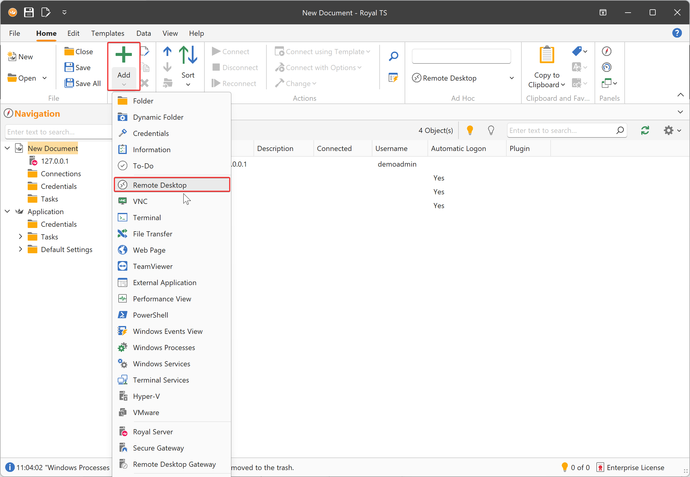
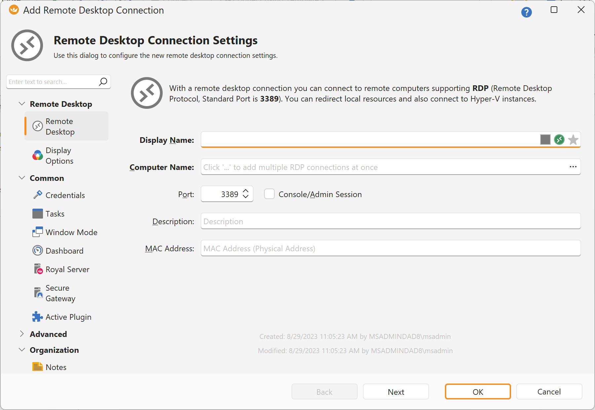
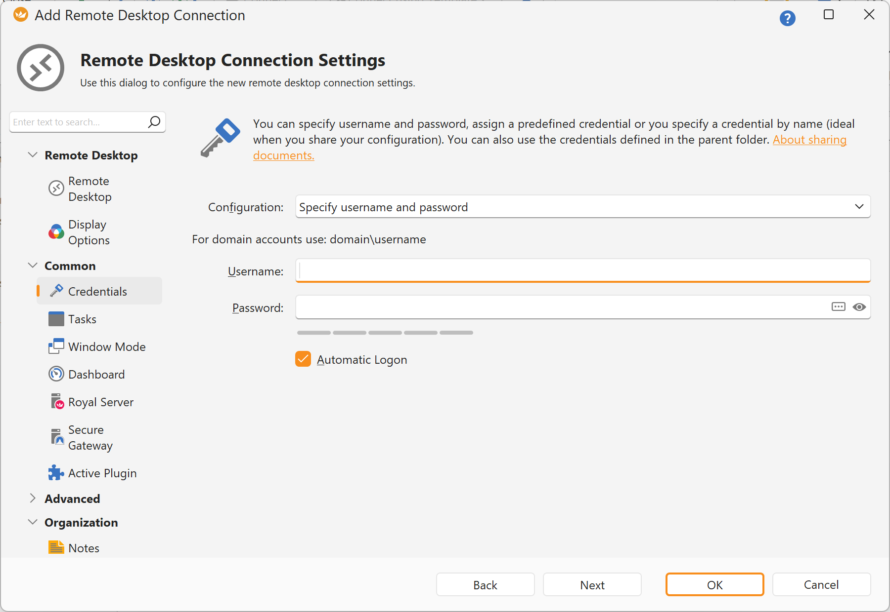
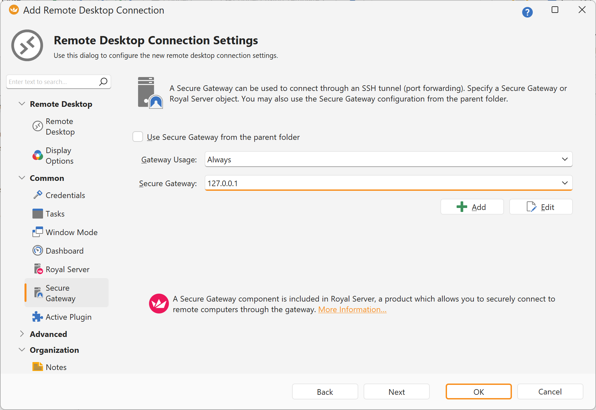
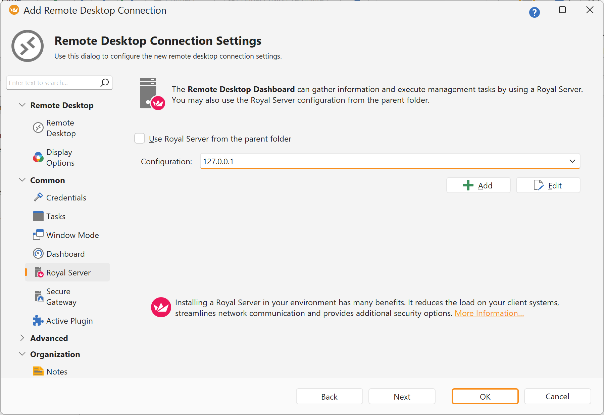
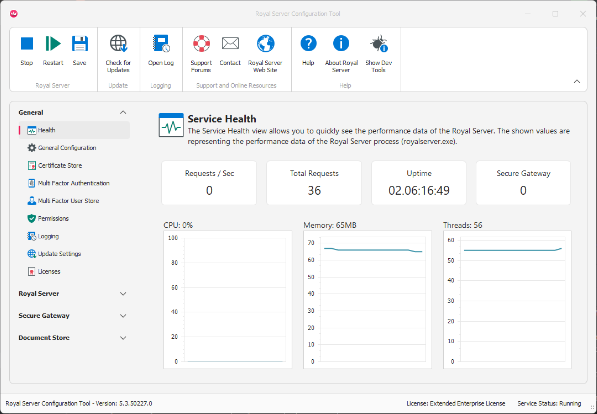

Example: Creating an RDP connection that is using Royal Server
Setup of Royal Server
Royal Server needs to be running, make note of the Primary Server Binding (the IP and Port Royal Server is using), we will use this later on.
Setup of Royal TS
In order to use Royal Server from Royal TS/X, first you need to createa a new document.
Note
The steps outlined here are very similar to our Royal TSX product for macOS.
If you have not done yet, create a new document.

Note
The application document is a special kind of document, stores important application settings (Options) and also features some out-of-the-box command tasks. You cannot add connections directly to the application document. Create your own document(s) to store connections.
Specify a name and save the document.

Continue by adding a Remote Desktop Connection by clicking Add and Remote Desktip Connection.

Specify a Display Name and a Computer Name (which is the DNS name or IP of the server you want to connect to):

Specify a credential that can be used to connect to the server. These credentials are used to logon to the Windows machine you want to remotely connect to.

Note
You don't need to specify passwords directly. There are more flexible ways to specify a credential.
Now, in order to use Royal Server for the connection, specify a Secure Gateway object. This makes sure that Royal TS is not connecting directly to the server but through an SSH tunnel by Royal Server.

Note that you have to set the Gateway Usage to Always and select the previously created Royal Server object.
Note
You might have noticed a configuration option called "Royal Server" on the RDP connection. This is not used for opening the connection but to show the currently open Terminal sessions open in the Dashboard tab (if open). . You can leave this blank if you are not interested in the open Terminal Sessions on this server.
Right-click on the RDP connection and click Connect.
Note
When connecting for the first time, Royal TS is asking to validate thumbprint of the certificate. This helps to prevent man-in-the-middle attacks. man-in-the-middle attacks.  The correct thumbprint is shown under in the Royal Server Configuration Tool under Royal Server -> Service Configuration -> Primary Server Binding - Certificate.
The correct thumbprint is shown under in the Royal Server Configuration Tool under Royal Server -> Service Configuration -> Primary Server Binding - Certificate.
The open Secure Gateway connection can be seen on the Royal Server Configuration Tool General -> Health view:
